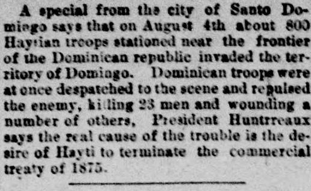
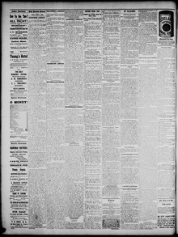

See the full pageVer la página completaA special from tht city of Santo Do mingo says thatUn especial de la ciudad de Santo Domingo dice que
The Daily Kennebec Journal reported that approximately 800 Haitian soldiers invaded Dominican territory along the frontier on August 4. Dominican forces repulsed the invasion, killing twenty-three Haitian soldiers and wounding several others. President Ulises Heureaux stated that the clash stemmed from Haiti's desire to abrogate their bilateral commercial treaty.El Daily Kennebec Journal informó que aproximadamente 800 soldados haitianos invadieron territorio dominicano a lo largo de la frontera el 4 de agosto. Las fuerzas dominicanas repelieron la invasión, matando a veintitrés soldados haitianos e hiriendo a varios otros. El presidente Ulises Heureaux afirmó que el enfrentamiento se originó en el deseo de Haití de derogar su tratado comercial bilateral.
FULL TEXT:TRADUCCIÓN:
A special from the city of Santo Domingo says that on August 4th about 800 Haytian troops stationed near the frontier of the Dominican republic invaded the territory of Domingo. Dominican troops were at once despatched to the scene and repulsed the enemy, killing 23 men and wounding a number of others. President Huntrreaux says the real cause of the trouble is the desire of Hayti to terminate the commercial treaty of 1875.Un especial desde la ciudad de Santo Domingo dice que el 4 de agosto unos 800 soldados haitianos estacionados cerca de la frontera de la república dominicana invadieron el territorio de Domingo. Tropas dominicanas fueron despachadas de inmediato a la escena y repelieron al enemigo, matando a 23 hombres e hiriendo a un número de otros. El presidente Huntrreaux dice que la causa real del problema es el deseo de Haití de terminar el tratado comercial de 1875.
Daily Kennebec Journal. Augusta, Me., August 25, 1890.
See the original at the Library of CongressVer el original en la Biblioteca del Congreso
Published by: Sprague, Owen & Nash, 1870-1975.Publicado por: Sprague, Owen & Nash, 1870-1975.
Edition: Edition 1Edición: edición 1
Page: 4Página: 4
Frequency: daily (1870–1975)Frecuencia: diario (1870–1975)
Collection: Chronicling America, Library of CongressColección: Chronicling America, de la Biblioteca del Congreso
LCCN: sn82014248LCCN: sn82014248
OCLC: 8810696OCLC: 8810696
Rights: public domain, according to the Library of CongressDerechos: dominio público, según la Biblioteca del Congreso